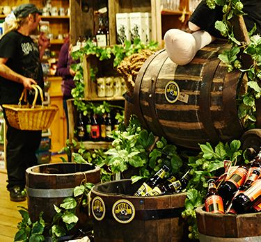

Beers of the festival
Black Sheep Brewery
Black Sheep was born from the pioneering spirit of Paul Theakston who, in 1992, followed his heart and dared to start a new brewery.
Set in Masham, North Yorkshire, Black Sheep produces much loved cask, keg and bottled beers and continues to go against the grain with a flow of new and experimental brews.
Each beer is the culmination of brewing expertise spanning six family generations.
Today, Paul's sons Rob and Jo Theakston continue that spirit as Black Sheep stands tall amongst UK breweries, built on a solid reputation for creating beer of outstanding quality full of passion and integrity.
Dark Star Brewery
As a rule we don't make things easy for ourselves.
We started life back in 1994 in the cellar of The Evening Star pub in Brighton with a brew kit marginally bigger that that used by an enthusiastic home brewer.
Our love of American hops that has shaped the beers we've become known for, started when our Chairman, Peter Halliday, returned from a business trip across the pond with a suitcase full of hops - we all still agree that he did well to get through customs with his vegetation. We're a bit bigger than that now and use a few more hops, but the free spirited nature still very much holds true.
Lazy Lizard Beer Company
Lazy Lizard Beer Company was set up by David and Lynn Flower in 2015 in Brighton, East Sussex. We brew fine contemporary craft ales and lager using only the highest quality ingredients. Our quality levels are of the highest standard, with every batch of beer we brew tested by an independent laboratory. This ensures the beer meets our high standards before being sent out from the brewery for consumption by you, our customer.
We also have the brewing skill to brew fantastically tasting, gluten free beers. We use a low protein barley and meticulous brewing methods that result in the natural breakdown of the protein. Our filtration process that follows removes any residue. We do not use any de-glutenising agents or additives.
David has been in the beer industry for over twenty years working for the likes of Whitbread, Interbrew, AB Inbev , Scottish and Newcastle and Heineken. Whilst visiting ( and sampling of course ) some great breweries on the continent such as Hoegaarden, Leffe, Staropramen, Belle Vue, Franziskaner and Affligem his passion grew for going it alone and creating his own fantastic tasting beers that transport you to your very own paradise. In November 2015 this dream came true and Lazy Lizard was born.
Let us take you to your happy place.